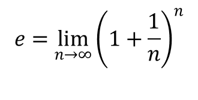
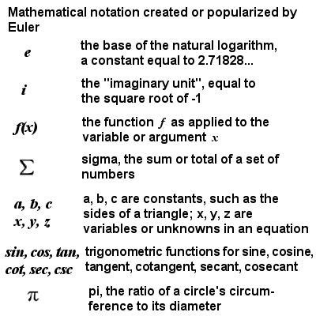
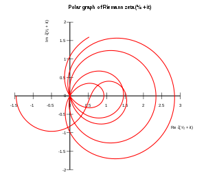

The full impact of Euler's massive influence on mathematics cannot be summed up quickly or simply, however, here are some of his most well-known contributions.
Euler was the first to study the number "e", which equals approximately 2.718. Euler proved that "e" was irrational, meaning that it goes on forever without repeating, similarly to π. The value of "e" is found in numerous mathematical formulas including those that describe nonlinear increases or decreases, and the statistical "bell curve". "e" is usually defined by this equation:

Euler either created, popularized, or standardized much of the notation that mathematicians use today. These efforts in standardization helped to encourage collaboration and internationalize mathematics.
Euler also calculated the values of the Riemann zeta function at even positive integers, the first of which provides a solution to the Basel problem.
 